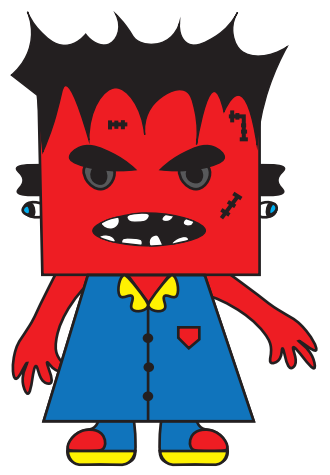

KARAKTER TASARIMLARI
Tasarlamış olduğum bir sirk robotu duygusal ve fiziksel tepkilerini çevresindeki dünyaya yansıtan bir karaktere sahiptir.
Bu robot öfke veya stres anlarında kontrölsüz hareketler sergileyebilir. Hareketleri genellikle hızlı,sert ve düzensiz olur.
Sakin bir gösteri yerine çevresine ani tepki veren tedirgin bir enerji yayar. Bu robotun dış görünümü de bu duygusal hali yansıtır.
